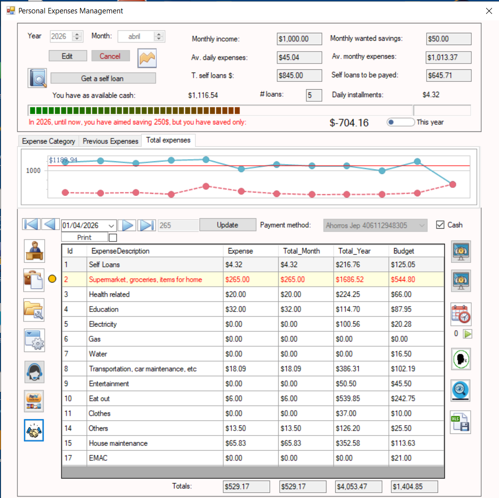
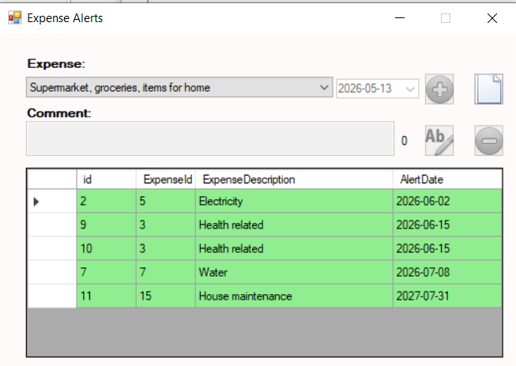
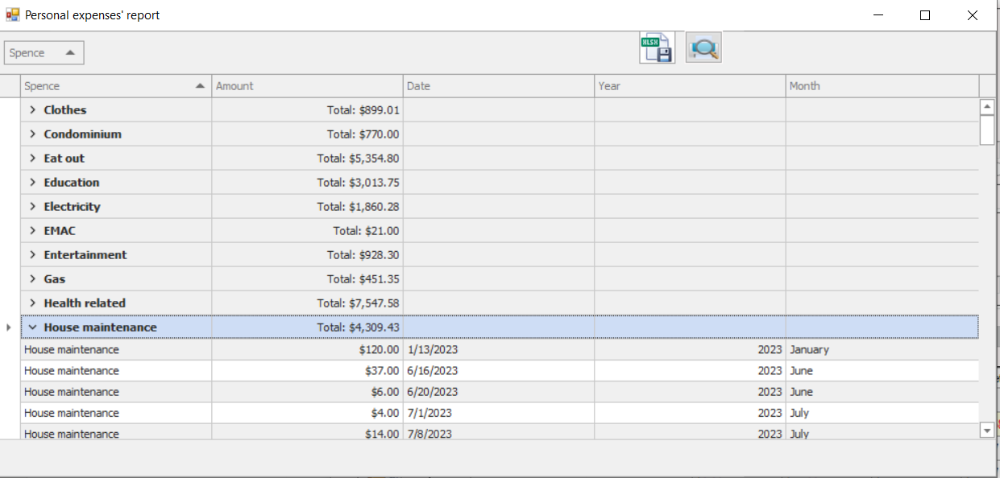
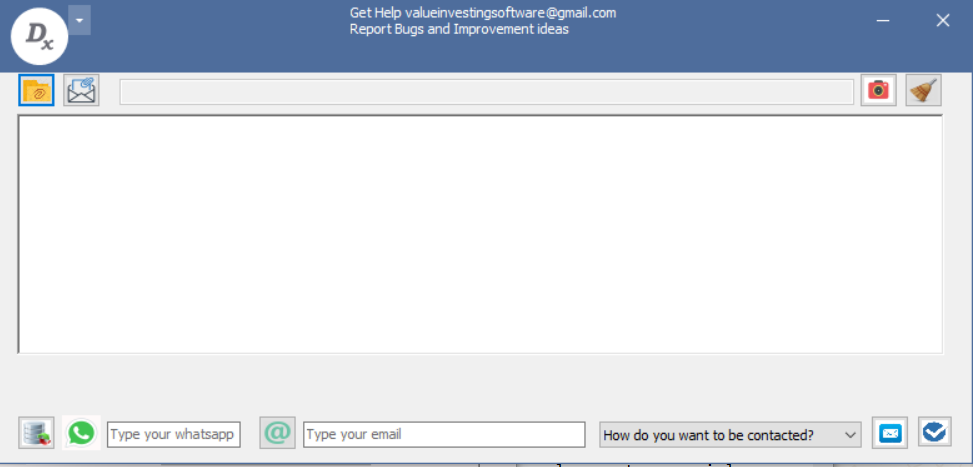

Interfaccia Principale di Gestione delle Spese
Dashboard principale del modulo di gestione delle spese personali con accesso agli strumenti finanziari, categorie di spesa e controlli di budget.

Registrazione dei Prestiti Personali
Finestra utilizzata per registrare prestiti personali quando le spese mensili superano il reddito disponibile.

Analisi delle Tendenze delle Spese per Categoria
Grafico a linee che mostra le spese mensili della categoria selezionata negli ultimi 12 mesi, comprese le spese parziali del mese corrente.

Analisi delle Tendenze delle Spese Totali
Grafico a linee che mostra le spese mensili totali di tutte le categorie negli ultimi 12 mesi.

Analisi del Risparmio e delle Spese Eccessive
Grafico ad area che visualizza i risparmi mensili e le situazioni di spesa eccessiva nel tempo.

Gestione delle Spese Ricorrenti
Interfaccia per registrare spese ricorrenti e suddividere grandi pagamenti annuali in rate mensili più gestibili.

Proiezione delle Obbligazioni Future
Grafico a linee che mostra obbligazioni pendenti e pagamenti programmati nei mesi futuri.

Configurazione degli Avvisi di Spesa
Pannello di configurazione per creare avvisi di promemoria associati a spese e date di scadenza specifiche.

Dashboard di Analisi delle Spese
Interfaccia centralizzata utilizzata per generare grafici e analizzare dinamicamente le abitudini di spesa personali.

Confronto Mensile delle Spese
Grafico a linee che confronta le spese mensili tra gli anni selezionati per spese totali o categorie specifiche.

Grafico a Torta della Distribuzione delle Spese
Visualizzazione tramite grafico a torta della distribuzione delle spese per gli anni e le categorie selezionate.

Mappa di Calore delle Spese
Visualizzazione heat map che mostra l’intensità delle spese in tutte le categorie negli ultimi 12 mesi.

Report Dinamici delle Spese
Modulo avanzato di reportistica che consente di raggruppare dinamicamente i dati per categoria, anno, mese e giorno.

Configurazione dei Parametri del Sistema
Pannello di personalizzazione per regolare i parametri del software e le preferenze di gestione finanziaria personale.

Interfaccia di Supporto Tecnico
Finestra di supporto che fornisce assistenza tecnica e risorse di aiuto diretto agli utenti.
